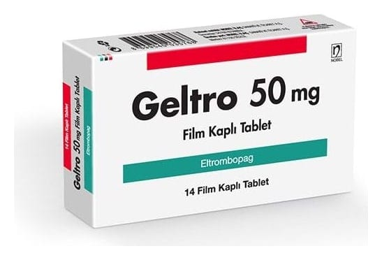

Geltro 50 mg Film Kaplı Tablet, 14 Adet

Ne için kullanılır
KT · Bölüm 1GELTRO etkin madde olarak eltrombopag içerir. GELTRO trombopoietin reseptör agonistleri adı verilen bir ilaç grubuna aittir. GELTRO, kanınızdaki pıhtılaşmayı sağlayan kan hücresi (trombosit/kan pulcuğu) sayısının artırılmasına yardımcı olmak için kullanılır. Trombositler (kan pulcuğu) kanamanın azaltılması veya önlenmesine yardımcı olan kan hücreleridir.
GELTRO, 14 ve 28 film kaplı tablet içeren ambalajlarda bulunmaktadır. GELTRO, turuncu renkli, yuvarlak, bombeli film kaplı tabletler halindedir.
GELTRO, daha önce kullanılan ilaçlar ile yanıt alınamayan (kortikosteroidler veya immünglobulinler) 1 yaş ve üzeri hastalarda immün (primer) trombositopeni (ITP) adı verilen bir kanama bozukluğunu tedavi etmek için kullanılır.
ITP’ye düşük kan trombosit sayısı (trombositopeni) neden olur. ITP hastalarında kanama riski yüksektir ve peteşi (deri altında iğne ucu büyüklüğünde düz yuvarlak kırmızı lekeler), çürüme, burun kanamaları, diş eti kanamaları ve kesik veya yaralanma meydana geldiğinde kanamanın kontrol edilememesi gibi belirtiler görülebilir.
GELTRO, hepatit C virüsü (HCV) enfeksiyonu olan yetişkinlerde, interferon tedavisi sırasında yan etkilerle ilgili sorunlar yaşamışlarsa, düşük trombosit sayısını (trombositopeni) tedavi etmek için de kullanılır. Hepatit C’li birçok kişide, sadece hastalığın bir sonucu olarak değil, aynı zamanda tedavide kullanılan bazı antiviral ilaçlar nedeniyle de trombosit sayısı düşüktür. GELTRO kullanmak, tam bir antiviral ilaç (peginterferon ve ribavirin) tedavisini tamamlamanızı kolaylaştırabilir.